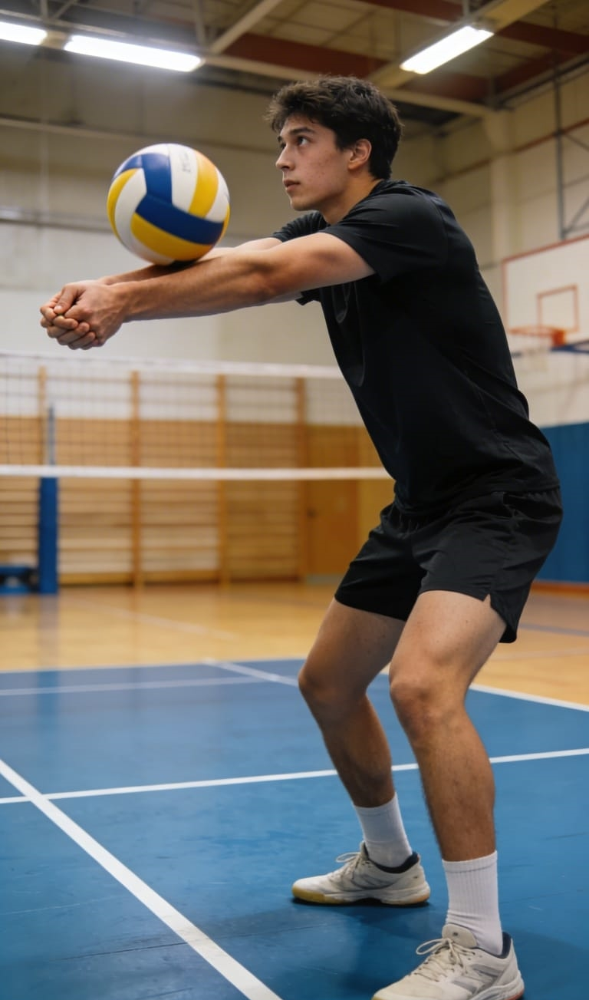

Este proyecto de investigación propone el desarrollo de un sistema basado en inteligencia artificial y visión por computadora orientado a mejorar la técnica de golpeo con antebrazos en jugadores de voleibol de los semilleros de la Universidad Mariana.
La solución permite analizar movimientos en tiempo real, identificar errores técnicos y proporcionar retroalimentación inmediata para optimizar el rendimiento deportivo.
